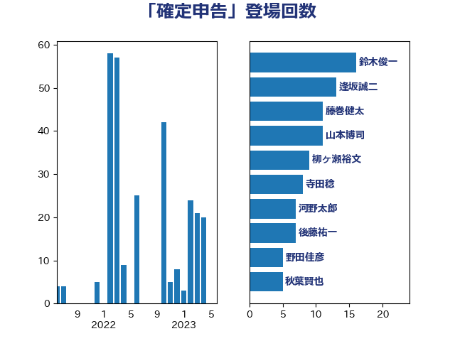

単語「確定申告」

| 山本博司 | 公明党 | 11 回 |
| 後藤祐一 | 立憲民主党 | 11 回 |
| 鈴木俊一 | 自由民主党 | 11 回 |
| 麻生太郎 | 自由民主党 | 10 回 |
| 勝部賢志 | 立憲民主党 | 9 回 |
| 藤巻健太 | 日本維新の会 | 9 回 |
| 柳ヶ瀬裕文 | 日本維新の会 | 8 回 |
| 梶山弘志 | 自由民主党 | 7 回 |
| 長坂康正 | 自由民主党 | 7 回 |
| 山田美樹 | 自由民主党 | 6 回 |
| 杉久武 | 公明党 | 5 回 |
| 野田佳彦 | 立憲民主党 | 5 回 |
| 大家敏志 | 自由民主党 | 4 回 |
| 末松義規 | 立憲民主党 | 4 回 |
| 笠井亮 | 日本共産党 | 4 回 |
| 菅義偉 | 自由民主党 | 4 回 |
| 角田秀穂 | 公明党 | 4 回 |
| 江島潔 | 自由民主党 | 3 回 |
| 浜田聡 | NHK党 | 3 回 |
| 田村貴昭 | 日本共産党 | 3 回 |
| 西村康稔 | 自由民主党 | 3 回 |
| 山際大志郎 | 自由民主党 | 2 回 |
| 岡本あき子 | 立憲民主党 | 2 回 |
| 岡本三成 | 公明党 | 2 回 |
| 岸真紀子 | 立憲民主党 | 2 回 |
| 柚木道義 | 立憲民主党 | 2 回 |
| 櫻井周 | 立憲民主党 | 2 回 |
| 海江田万里 | 立憲民主党 | 2 回 |
| 足立康史 | 日本維新の会 | 2 回 |
| 階猛 | 立憲民主党 | 2 回 |
| 伊藤岳 | 日本共産党 | 1 回 |
| 住吉寛紀 | 日本維新の会 | 1 回 |
| 古賀之士 | 立憲民主党 | 1 回 |
| 吉田統彦 | 立憲民主党 | 1 回 |
| 吉良よし子 | 日本共産党 | 1 回 |
| 堀井巌 | 自由民主党 | 1 回 |
| 塩川鉄也 | 日本共産党 | 1 回 |
| 塩村あやか | 立憲民主党 | 1 回 |
| 宮崎政久 | 自由民主党 | 1 回 |
| 小池晃 | 日本共産党 | 1 回 |
| 山田賢司 | 自由民主党 | 1 回 |
| 岸田文雄 | 自由民主党 | 1 回 |
| 平井卓也 | 自由民主党 | 1 回 |
| 平林晃 | 公明党 | 1 回 |
| 柘植芳文 | 自由民主党 | 1 回 |
| 梅村聡 | 日本維新の会 | 1 回 |
| 清水貴之 | 日本維新の会 | 1 回 |
| 熊田裕通 | 自由民主党 | 1 回 |
| 玉木雄一郎 | 国民民主党 | 1 回 |
| 石井章 | 日本維新の会 | 1 回 |
| 石井苗子 | 日本維新の会 | 1 回 |
| 美延映夫 | 日本維新の会 | 1 回 |
| 船橋利実 | 自由民主党 | 1 回 |
| 若松謙維 | 公明党 | 1 回 |
| 藤井比早之 | 自由民主党 | 1 回 |
| 藤原崇 | 自由民主党 | 1 回 |
| 西田昌司 | 自由民主党 | 1 回 |
| 高木かおり | 日本維新の会 | 1 回 |